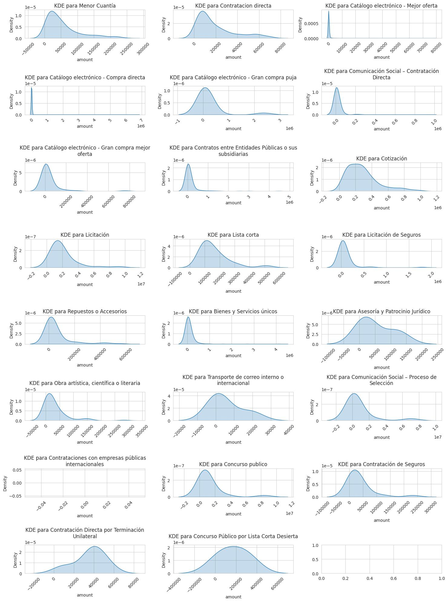
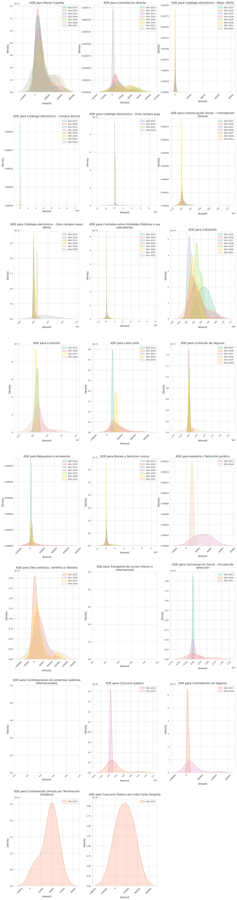
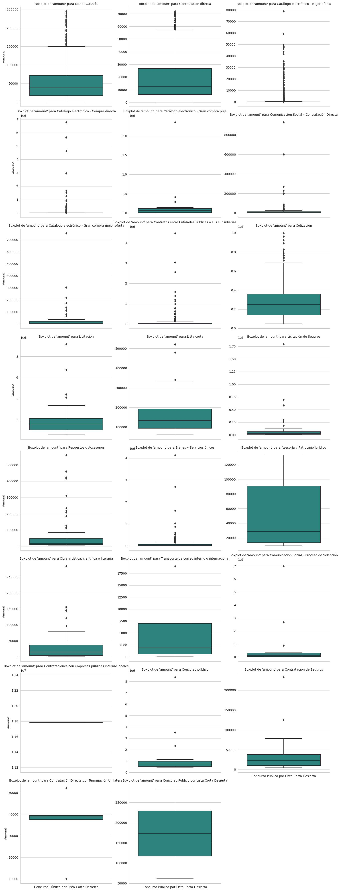
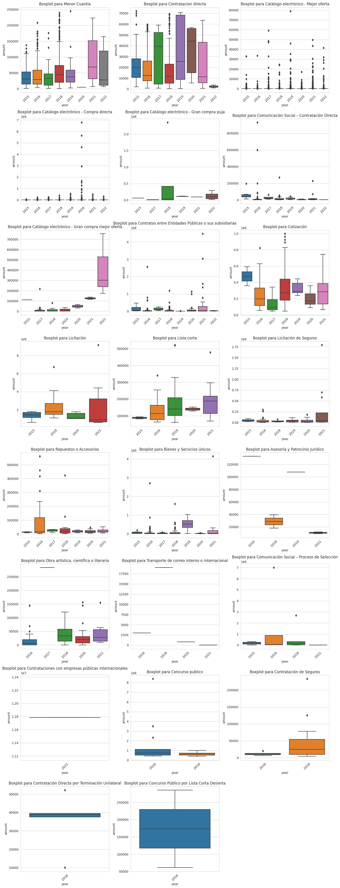
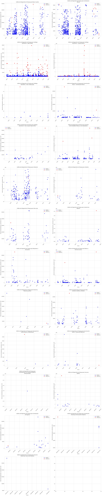

Nuestra variable de interés es el monto por el cual se adquirió cada contrato. Como primer paso, examinamos detenidamente la distribución de esta variable en función de los diferentes tipos de contratación, teniendo en cuenta que cada tipo de contrato tiene sus particularidades. Además, analizamos la evolución a lo largo del tiempo, desglosando la distribución por año, lo que nos permite comprender cómo han variado los contratos con el tiempo. Finalmente, presentamos una gráfica que resalta los datos anómalos identificados por nuestro modelo Isolation Forest.
Nota: Al obtenter una muestra aleatoria, en algunos contratos tiene poca información, razón por la cual sus gráficas estan vacías o con muy pocos datos
Esta imagen muestra la distribución de datos utilizando el método KDE (Estimación de Densidad Kernel) para cada tipo de contrato. Proporciona una visión detallada de cómo varían los montos de los contratos en función de las categorías de contratación.
En esta imagen, se presenta la distribución de datos utilizando el método KDE, pero esta vez desglosada por tipo de contrato y año. Esto permite observar cómo han evolucionado las distribuciones de montos de los contratos a lo largo del tiempo para cada categoría de contratación.
La imagen 3 muestra boxplots que proporcionan información sobre la distribución de los montos de los contratos para cada tipo de contrato. Los boxplots ofrecen una representación gráfica de la mediana, los cuartiles y los valores atípicos en los datos.
En la imagen 4, se muestran boxplots que representan la distribución de los montos de los contratos desglosada por tipo de contrato y año. Esto permite analizar cómo han variado las distribuciones a lo largo del tiempo en cada categoría de contratación.
Esta última imagen presenta los resultados de nuestro modelo de Machine Learning. Proporciona información sobre cómo el modelo identifica y etiqueta datos anómalos en el conjunto de datos de contratos. Esto es fundamental para la detección de posibles contratos inusuales o sospechosos (Para saber que contratos son anómalos revisar el Dashboard).
Se consideró que el valor del hiperparámetro de la variable contaminación (Porcentaje de valores atípicos) sea del 1% para todos los modelos. Sin embargo, el valor podria variar según el tipo del modelo, situación que se deja abierta para futuras mejoras en el modelo.
